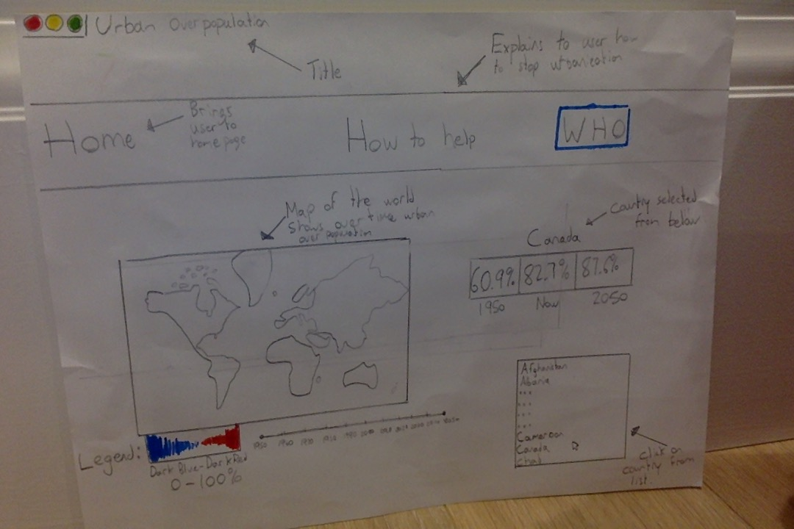

Original Chosen Design:

Changes to my design:
There is a seperate tab for the map as the code was very to difficult to navigate with the map on the main tab
I changed the how to help tab into a effects of urbanization tab as unfortunately there is little you can do to stop urbanization
I added graphs to the website. I thought it was important to let the reader see different graphs, especially the environmental one
Because I put a lot of focus into the map, I did not have a list of countries, but instead you would click on the map to see statistics
Added another link that helps the reader fully understand urbanization before reading the graphs